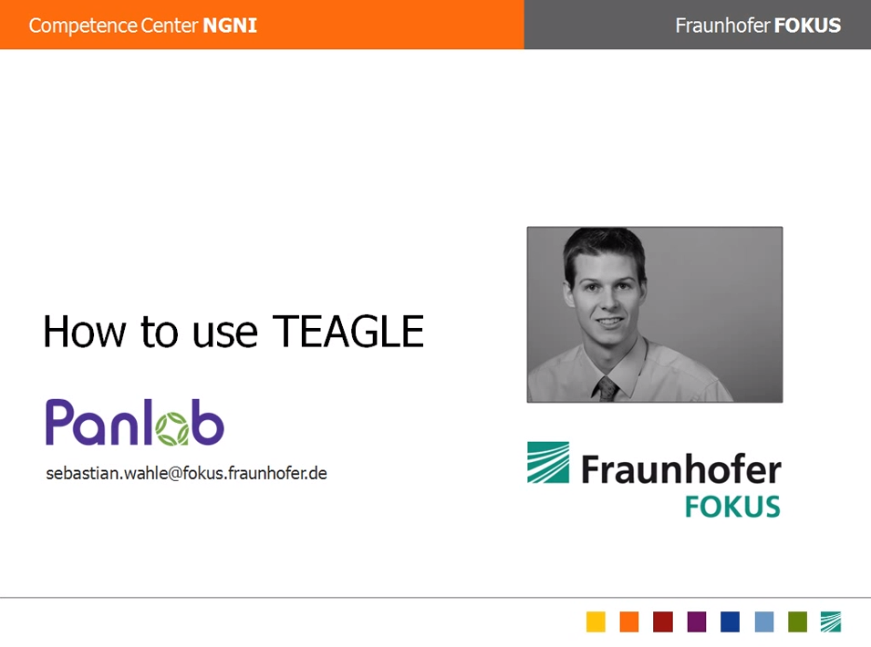

About FITeagle
FITeagle is an extensible open source experimentation and management framework for federated future internet testbeds. It is mainly based on the Panlab FIRE-Teagle developments.
Architectural Overview

Projects & Sponsors
Development
Quick Start
To start the VCTTool:
git clone https://github.com/tubav/fiteagle.git
cd fiteagle/clients/vcttool
./src/main/scripts/startVCTTool.sh
Sources
http://fiteagle.org/sources
Issue Tracker
http://fiteagle.org/issues
Continuos Integration
http://fiteagle.org/ci
Further Information
Have a look at the auto generated site for developers:
http://fiteagle.org/doc/
Demonstrations
Screenshots
- FITeagle VCT Tool (Controller)

Screencasts
- OpenLab WP1 Demo 2012

- OpenLab WP2 Demo 2012

- FIRE Teagle: How to access VCT Tool
 - FIRE Teagle: How to use VCT Tool
- FIRE Teagle: How to use Teagle
Publications
Support or Contact
A mailing list is currently under development. Please contact the Team at TU Berlin via fi(at)av.tu-berlin.de for now.